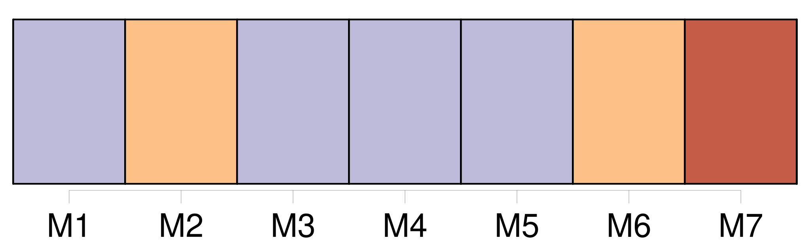
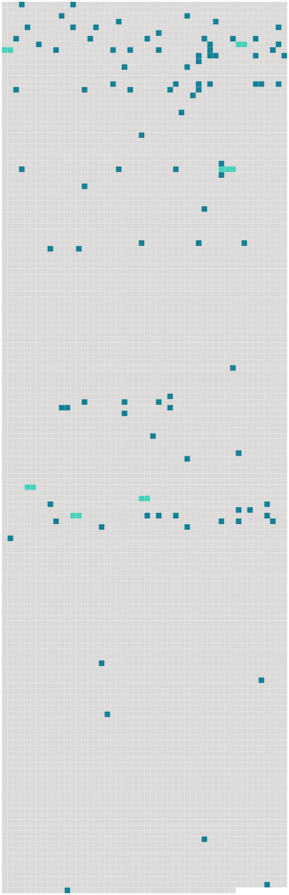

Longueur nb maillons : 100 mentions |
 |
C'est chez [Manine] , la jeune veuve du garçon meunier, [dont] la maison est séparée du moulin par un grand verger, et une petite genêtière. [4 phrases]
Et [Manine] ferme la porte de la maison, par où entre un brouillard blanc qui s'élève des prés d'alentour.
[Manine] s'appelle Marceline, comme tante Rude s'appelle Gertrude, mais ces deux noms trop difficiles à prononcer pour les jumeaux ont été transformés ainsi par eux, et personne ne songe à les rétablir. [Manine] est une parente éloignée, devenue orpheline, et recueillie par oncle meunier. Tante Rude [l'] a tout de suite employée aux travaux du moulin et des champs, puis, vers [sa] dix-huitième année, sans s'inquiéter de [son] goût, elle [l'] a mariée au garçon meunier qui touchait à la quarantaine.
Le ménage s'est trouvé parfaitement d'accord malgré la différence d'âge, et dès la première année, [Manine] a mis au monde Clémence qui a maintenant près de sept ans.
Le garçon meunier est mort d'un accident au cours de l'hiver, et [Manine] attend d'un jour à l'autre la venue d'un nouvel enfant. J'ai un réel contentement à me retrouver près d' [elle] À la lueur d'une lampe pendue au plafond, je [la] regarde aller et venir dans la maison, où [elle] répare le désordre que nous venons de faire. [Sa] grossesse alourdit un peu [ses] mouvements, et [ses] sabots claquent mollement sur les dalles. De temps en temps [elle] fait semblant de gronder Clémence qui ne veut pas s'endormir.
Puis, après avoir ranimé le feu et fait chauffer pour moi un bol de lait, [elle] approche une chaise et [s'assied] auprès de mon lit. [Elle] est [elle -même] si contente de me voir là qu' [elle] se met à parler librement de toute chose.
[Son] veuvage ne [l'] a guère changée, [sa] voix seulement est devenue comme craintive, mais [son] visage tout en largeur reste doux et sérieux, et [elle] continue de sourire en parlant. [1 phrases] À l'âge de six ans, alors que mes parents m'avaient confiée à tante Rude pour une assez longue convalescence, [c'] est [Manine] [qui] s'était occupée de moi.
[Elle] m'emmenait partout où [elle] avait à faire, et il arrivait que nous passions des journées entières, aux champs, au jardin ou à la rivière.
Ce qui me plaisait le plus dans les travaux de [Manine] c'était de suivre les dindes et les pintades qui se cachaient dans les haies pour pondre, et dont il nous fallait chercher et découvrir les œufs.
J'étais paresseuse le matin, et [Manine] me grondait souvent pour me faire lever, mais lorsqu' [elle] me disait : « Dépêche -toi, on va suivre une dinde », j'étais vite réveillée et vêtue. [4 phrases]
[Manine] en restait toujours stupéfaite.
— Elle a fondu sous [mes] yeux, disait [-elle]
[Elle] s'asseyait sur l'herbe alors, [tirait] [son] tricot de [sa] poche et m' [interdisait] le moindre bruit. Du temps passait, au bout duquel [Manine] se levait pour explorer la haie.
[Elle] ne trouvait pas toujours ce qu' [elle] cherchait, mais il [lui] arrivait aussi de découvrir trois ou quatre beaux œufs bien cachés sous des feuilles sèches.
Il ne restait plus qu'à se rappeler l'endroit afin d'aller ramasser le nouvel œuf, mais il fallait bien se garder de surprendre la dinde au nid, car [elle] l'abandonnait sur l'heure, et tout était à recommencer. [4 phrases]
Ce soir, [Manine] et moi, nous nous plaisons au rappel de ces jours lointains, et la douceur que nous en ressentons, est comme un large écran qui nous cache le jour présent et nous en fait oublier la tristesse. [7 phrases] Au dehors rien ne bougeait, et dans la maison, [Manine] et Clémence dormaient d'un sommeil qu'on eût dit sans souffle. [8 phrases] À cause de la fenaison, [Manine] n'a guère le temps de s'occuper de la petite Reine, qu' [elle] a mise au monde le lendemain même de mon arrivée.
Levée avec le jour, [elle] change en hâte les langes de l'enfant, [approche] le berceau de mon lit, et [s'en va] en courant aider tante Rude au moulin, pour revenir plus vite encore aux heures de la tétée. Malgré la gentillesse du bébé qui commence à me sourire et me connaître, malgré la gaieté bruyante de Clémence, je m'ennuie de l'absence de [Manine] [2 phrases]
[Manine] manque d'argent pour acheter de l'étoffe, aussi, je taille brassières et petites robes dans de vieux jupons de diverses couleurs que j'assemble de mon mieux. [6 phrases]
La présence de [Manine] me fait moins faute depuis que Mme Lapierre vient passer ses après-midi avec moi. [9 phrases]
[Manine] est sûrement de mon avis, car aussitôt qu' [elle] aperçoit la mère et l'enfant, [elle] pousse ma voiture sous le gros noyer qui ombrage une partie de la maison et [elle] apporte pour Mme Lapierre [sa] plus belle chaise de paille. [50 phrases]
Je repousse même la petite Reine que [Manine] se plaît à mettre dans mes bras en disant : [11 phrases] Les récoltes rentrées et la vendange faite, [Manine] dut se résigner à prendre un nourrisson de Paris. [1 phrases] Il [lui] fallait bien gagner de quoi élever [ses] deux filles. La résignation [lui] fut pénible. [2 phrases]
Et [Manine] [qui] doit rester deux jours absente vient de partir, tremblante et affreusement tourmentée, quoique tante Rude [lui] eût assuré qu'elle saurait bien faire accepter le biberon à la petite Reine. Ainsi que je m'y attendais, à l'heure de la tétée, tante Rude m'a laissé le soin de tenir sa promesse à [Manine] [7 phrases] La petite Reine ne voulait pas s'endormir, rien ne la calmait ; ni le mouvement régulier du berceau, ni les airs lents que j'imitais de [Manine] [6 phrases]
Et tout à coup Clémence me dit : [1 phrases]
Et, tout en regrettant de ne pas posséder la belle noisette brune qui terminait le sein de [Manine] , j'approchai la petite Reine ma poitrine maigre et sans forme. [6 phrases]
Et, tout en pleurs, autant de la pitié qu'elle m'inspirait que du mal qu'elle continuait à me faire, je lui présentai le lait qui avait gardé toute sa tiédeur à l'abri de mon oreiller : [3 phrases] Clémence prit le départ de [sa mère] d'une autre manière.
Rassurée sur sa petite sœur elle sauta de mon lit à terre en demandant : [3 phrases]
Elle passa les mains sur son tablier rapiécé : [2 phrases] [Manine] à [son] retour trouva la petite Reine tétant son biberon comme si elle n'avait jamais connu le sein de [sa mère] Cependant, ce ne fut pas à tante Rude qu' [elle] adressa [ses] remerciements.
[Elle] mit sur mon front un baiser tout pareil à celui que j'avais donné à [sa] fille la nuit d'avant, et la voix tout émue, [elle] me dit : Je n'eus pas à attendre si longtemps ma récompense ; Manine l'apportait avec [elle] Pendant [son] court séjour à Paris, [elle] avait trouvé le moyen de se rendre chez mes parents.
Et d'eux, et des enfants, [elle] avait tant à me dire, que la journée passa tout entière avant qu' [elle] n'eût fini. [1 phrases] Comme par miracle, les paroles de [Manine] m'avaient transportée auprès des miens. [48 phrases]
Je me défendis : [7 phrases]
Tante Rude qui ne se souciait pas plus de ma peine que de ma joie, me chanta une autre chanson : [12 phrases]
Oncle meunier ne parut pas trop surpris, et tante Rude qui le paraissait moins encore, offrit de m'aider à nettoyer et mettre en ordre notre propre maison qui était mitoyenne avec celle de [Manine] [52 phrases]
Au grand contentement de tante Rude je demandai à faire la moisson en remplacement de [Manine] [13 phrases]
[Manine] , pleine de pitié, ne me laissait rien faire chez nous et m' [obligeait] à me mettre au lit en rentrant ; mais j'étais trop lasse pour dormir, et je passais mes nuits à m'agiter en appelant le sommeil. |
 |
Il est possible de télécharger la ressource sur la page Ortolang |
Si vous avez des questions ou vous voyez des erreurs, merci d'envoyer un mail à silvia.federzoni89@gmail.com |